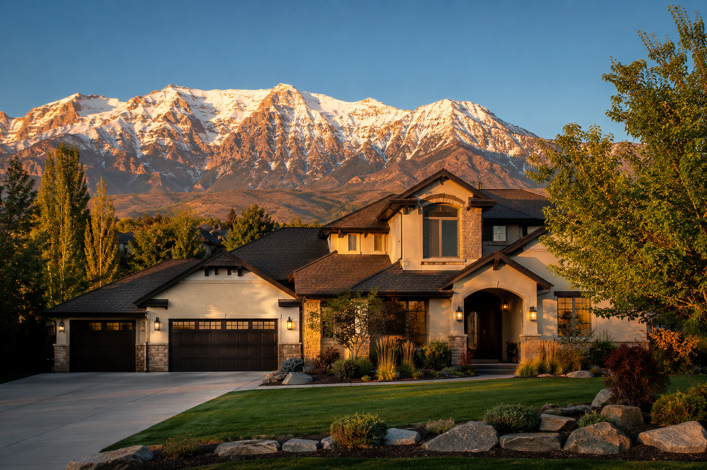
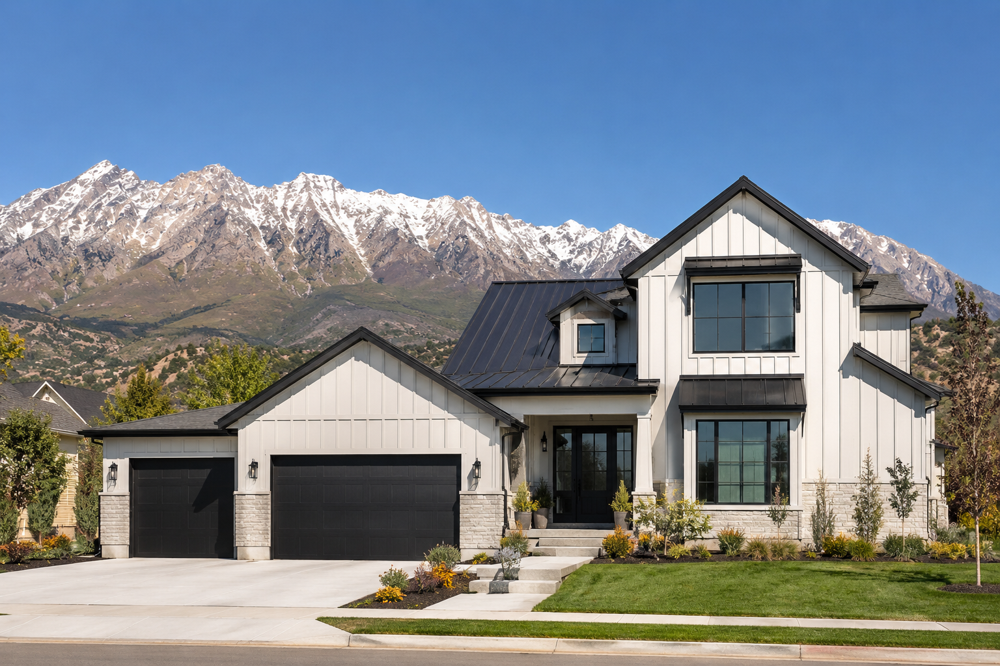
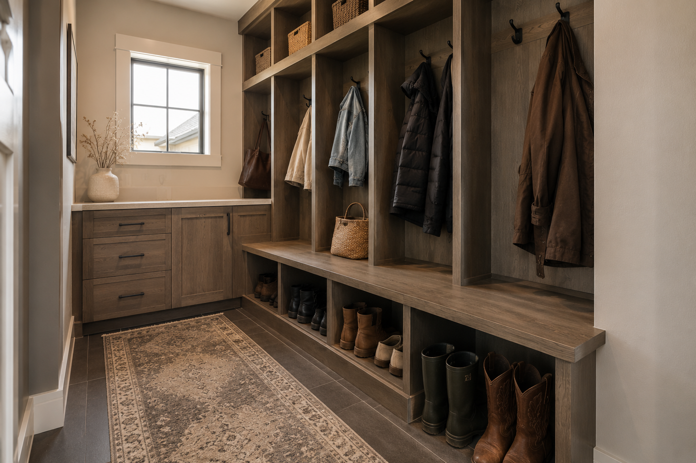
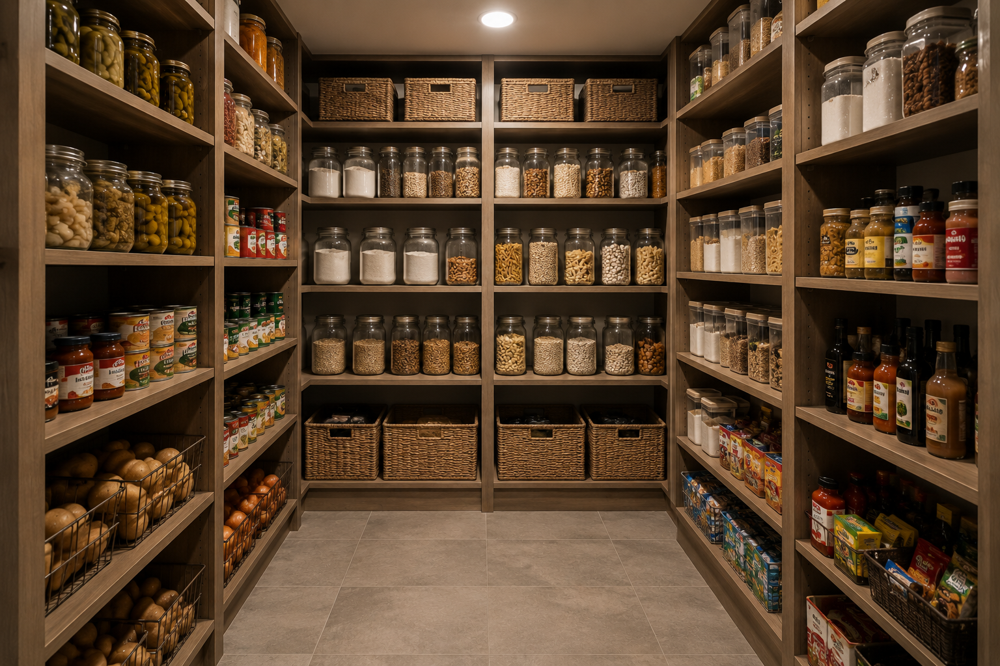

Utah County homes are genuinely different from what most relocating buyers are used to. Here is what to expect before you start searching.
Utah County is not a one-size-fits-all housing market. The inventory spans a wide range of styles, sizes, and price points depending on which part of the county you are in and whether you are looking at new construction or resale.
The Rambler
Single story, fully on one level. The most beloved floor plan in Utah County and genuinely hard to find in good condition because everyone wants them. Great for families who do not want stairs, older buyers, and anyone who has carried furniture up stairs one too many times.
Highly sought after. Move fast when you find a good one.
The Two-Story
The dominant floor plan in new construction. Main floor living with bedrooms upstairs. More square footage for the price than a rambler. The layout works well for families — kids upstairs, main living downstairs.
Most common in newer subdivisions throughout the county.
Townhomes and Condos
The most accessible entry point into the market. Concentrated in Lehi, Saratoga Springs, Eagle Mountain, and Orem. HOA fees cover exterior maintenance in most cases. A smart first purchase if you are not ready for a full single family home.
Price points vary widely. Do your HOA homework before you commit.
The Finished Basement
This one surprises almost every out-of-state buyer. Full basements are standard in Utah County homes and most of them are finished. You are effectively getting a second floor of living space underground. Extra bedrooms, family rooms, home offices, and full in-law suites are all common. Slab construction is rare here.
Factor the basement into your square footage comparison. It changes the math significantly.

Lehi, Saratoga Springs, Eagle Mountain, Vineyard, and south county cities are all actively building. If you are open to new construction, the selection is strong and the builder incentives are worth understanding before you sign anything.
More on new construction in Section 3 below →These are not complaints. They are features. But knowing them before you tour homes makes you a better buyer.
Food Storage Rooms
A dedicated room for storing a year or more of food is standard in many Utah County homes. It is a cultural practice with deep roots here. Out-of-state buyers find it either fascinating or excessive. Either way, it is genuinely useful extra storage.
Laundry Is Inside
Washers and dryers live inside the home here, always. Usually a dedicated laundry room, often on the main floor or near the bedrooms. Never in the garage. If you are used to garage laundry this is a welcome upgrade.
Three Car Garages
Standard in mid-range and above homes throughout the county. The outdoor recreation culture means most families have a boat, ATV, trailer, or all three. The garage is not just for cars.
Cold Storage
Unheated concrete rooms, often tucked under the front porch, built for canning, root vegetables, and food preservation. Common in older homes, occasionally included in newer builds. Completely foreign to most out-of-state buyers and genuinely useful once you understand it.
Mother-In-Law Apartments
Basement apartments with separate entrances are extremely common. The family culture here means multi-generational living is normal, not an exception. Many buyers end up renting theirs out as well. If a home has a legal ADU, factor that into your analysis.
Swamp Coolers vs Central Air
Older homes sometimes use evaporative coolers instead of traditional AC. They work beautifully in Utah's dry summers but have limitations on humid days. If you are touring an older home, ask what the cooling system is before you fall in love with the kitchen.
RV Parking
A significant number of Utah County homes have dedicated RV parking pads or extended driveways. If you have a boat, trailer, or RV, this is worth specifically searching for. Many HOAs prohibit street parking of recreational vehicles.
Mudrooms
Well-built Utah County homes almost always have a mudroom. Snow, hiking boots, ski gear, kids coming in from the backyard. The mudroom earns its square footage every single day of the year.
Sprinkler Blowouts
Every fall before the ground freezes, Utah County homeowners pay a technician to blow compressed air through their irrigation lines. It prevents the pipes from freezing and cracking over winter. If you are moving from a climate without hard freezes this will be a new concept. Budget around $50 to $100 annually and book early in September because everyone needs it done at the same time.

New construction gets a mixed reputation and some of it is deserved. But in Utah County right now it is worth taking seriously before you rule it out. Here is the honest version.
Builder Rate Buydowns
Many Utah County builders are currently offering mortgage rate buydowns as incentives. A 2-1 buydown or a permanent rate reduction can save you meaningful money over the life of the loan. These deals fluctuate. Ask your agent what is currently available before you tour.
The Upgrade Trap
Builders make a significant portion of their margin in the design center. The base price gets you in the door and the upgrades are where they recapture it. Go in with a budget for upgrades before you sit down with the design consultant. Know which upgrades add resale value (flooring, kitchen finishes, primary bath) and which ones are personal preference.
Lot Selection Matters More Than Most Buyers Think
Which direction your home faces, whether you back to a future commercial lot or open space, the slope of the lot, the proximity to the subdivision entrance. These all affect your daily life and your eventual resale. Do not let the model home distract you from the lot you are actually buying.
Bring Your Own Agent
The agent in the builder's sales office represents the builder, not you. Their job is to get the best deal for the builder. Bringing your own agent costs you nothing. In new construction the commission is built into the price regardless. Having representation in a new construction purchase is one of the most valuable things you can do.
Warranty Reality
New construction comes with a builder warranty but read it carefully. Structural warranties are typically 10 years, mechanical systems 2 years, and cosmetic defects often only 1 year. Document everything at your 11-month walk-through before the first year expires.
Local Tip
Spec homes (already built and sitting in inventory) often come with better incentives than build-to-order. Builders want to move finished product. If you can work with what exists rather than customizing from scratch, you frequently get a better deal.
Prices change. These descriptions do not. For current numbers reach out directly. I pull fresh comps for every client conversation.
Entry Level
Townhomes, condos, and smaller single family homes. Eagle Mountain City Center, south county cities, and parts of Saratoga Springs. Newer construction at accessible price points. The trade-off is usually commute time or lot size.
Move Up
The heart of the Utah County market. Two-story single family homes, some ramblers, finished basements common. Spread across most of the county with the best selection in mid-county cities and the north corridor.
Premium
Larger lots, better finishes, east bench locations with mountain views. Ramblers become more available at this level. Highland, east bench Pleasant Grove, Lindon, Mapleton, and parts of Alpine.
Luxury
Custom builds, estate lots, gated communities. Alpine, Suncrest, Mapleton, and Sundance area. Views, privacy, and square footage that is difficult to find anywhere else in the county at comparable prices to coastal markets.

Food storage rooms. One of the most uniquely Utah features you will find in homes here.
Should I buy new construction or resale?
It depends on your priorities. New construction gives you warranty coverage, modern finishes, and sometimes builder incentives. Resale gives you established neighborhoods, mature landscaping, and often more square footage per dollar. The right answer is different for every buyer. This is worth a real conversation. Reach out and we can work through it based on your specific situation.
Do all Utah County homes have basements?
The vast majority do, yes. Full basements are standard in most single family home construction in Utah County. Slab construction exists but is uncommon. When you see square footage listed, check whether the basement is included. It often doubles the usable living space.
What is a cold storage room?
An unheated concrete room, usually built under the front porch or in a corner of the basement, designed for storing canned goods, root vegetables, and preserved food at a consistent cool temperature. They are common in older Utah County homes and still appear in some new builds. Out-of-state buyers often have no frame of reference for them and then wonder how they ever lived without one.
Are HOA fees common in Utah County?
Yes, especially in newer subdivisions and any community with shared amenities. Master-planned communities in Lehi, Saratoga Springs, and Eagle Mountain almost always have HOAs. Always verify HOA fees and read the CC&Rs before making an offer. Surprises in the HOA documents are one of the most common things that derail a purchase after inspections.
How long does it take to close on a home in Utah County?
Resale purchases typically close in 30 to 45 days from accepted offer. New construction timelines vary significantly, from 30 days on a spec home that is already built to 6 to 12 months on a build-to-order. If you are relocating with a job start date, factor this in early and talk to your lender about rate lock options for longer timelines.
What should I know about buying a home with a mother-in-law apartment?
Verify that the ADU is permitted and legal before you close. Unpermitted basement apartments are common and they create liability and financing complications. If rental income from the ADU is part of your purchasing strategy, your lender will need documentation. Ask your agent to verify permit status as part of due diligence.
Tell me what you are looking for and I will tell you exactly where to look. The right home in the right neighborhood changes everything.
Talk to Kelsie.